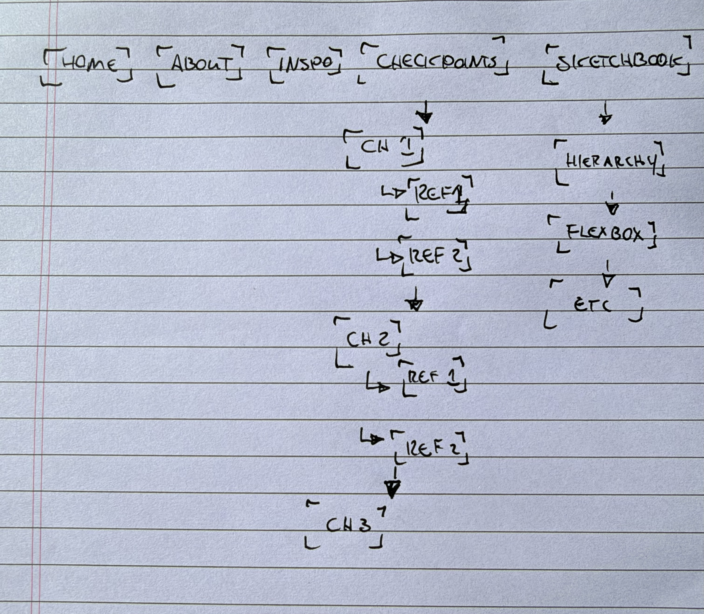
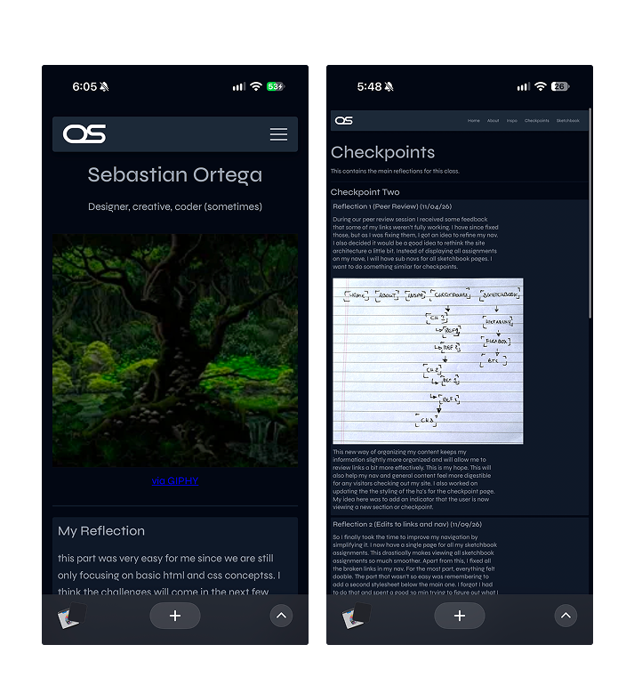
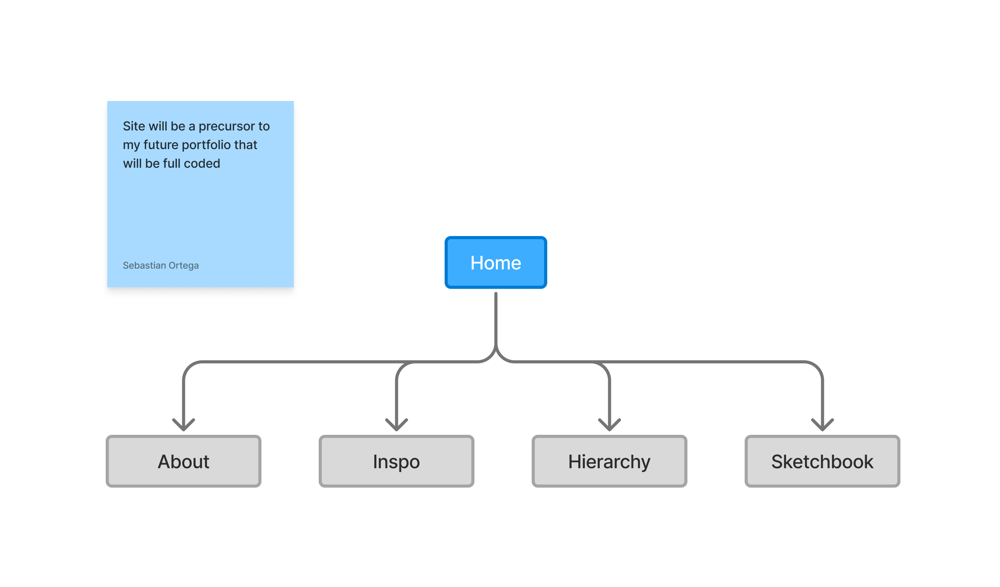

This contains the main reflections for this class.
During our peer review session I received some feedback that some of my links weren't fully working. I have since fixed those, but as I was fixing them, I got an idea to refine my nav. I also decided it would be a good idea to rethink the site architecture a little bit. Instead of displaying all assignments on my nave, I will have sub navs for all sketchbook pages. I want to do something similar for checkpoints.

This new way of organizing my content keeps my information slightly more organized and will allow me to review links a bit more effectively. This is my hope. This will also help my nav and general content feel more digestible for any visitors checking out my site. I also worked on updating the the styling of the h2's for the checkpoint page. My idea here was to add an indicator that the user is now viewing a new section or checkpoint.
So I finally took the time to improve my navigation by simplifying it. I now have a single page for all my sketchbook assignments. This drastically makes viewing all sketchbook assignments so much smoother. Apart from this, I fixed all the broken links in my nav. For the most part, everything felt doable. The part that wasn't so easy was remembering to add a second stylesheet below the main one. I forgot I had to do that and spent a good 30 min trying to figure out what I did wrong. I wish there was a simper way with basic html and css to alsmost have one single source of truth that can be reference, but can also take you to other css files that are important. I'm tired of having to edit so many css files.
Next up for me is to improve the inspo page and catch up on assignments. First I think I will catch up on assignments. I can work on the inpso page later.
From the start of my site I had focused on cohesion. I always made sure my nave was cohesive throughout the site. I even made sure to include my logo on each page. There are also hover states for the links already present.
Something that I decided to add more cohesion to was the h1 and subtitle for each page. I noticed that I don't have titles and subtitles for each main page. I do however have this in Inspo, so it makes sense to create a pattern here and utilize a playful effect for fun. I also decided to add a consistent typeface to all my pages. The typeface is currently going to be Syne.
The main element I focused on for this project was my navigation. I made sure it was sticky and utilized hover states and a translate effect. The transsition effects were a bit challenging to figure out. I knew I wanted the text to look as if it was elevating from the nav so I had to think about darkening the background color and transforming the link position a bit.
This assignment was definitely trickier than most. I feel like I got a better idea of how max and min height work, but not fully. It might be one of those things I have to get used to over time. I generally don't fully understand the terms, but I know how to set them up. And I know that anything below it will be affected by the media query breakpoint. The most difficult part was getting the hamburger menu to work.
The hamburger menu was a challenge because I had to use buttons and checkboxes that we haven't talked about. Thankfully I was able to follow through an existing video:
It was easy to follow through the video. The only downside is I didn't fully grasp all details. At the very least I'm happy with having a hamburger menu that I coded myself! I've had many experiences creating hamburger menus on figma and framer. I feel so much closer to having more control over my designs.

When I first worked on the site, I made it look and feel extremely basic. I mostly focused on getting the assignments done quickly. There wasn't much to really think about for me at this state. I also quickly made a sitmap to give me an idea of where info will be placed on my site.

This exercise was relatively easy for me. I was able to figure out how to create a hover stage and style nave globally. What was most challenging for me was trying to figure out the padding and margins just right. I wasn't sure if I was adding too much separate padding on the hover, nav-link, and nav css styling. One final thing is I really don't like having child stylesheets. I think they are a recipe for creating inconsistency, but I'm sure in time I will find use for them.
During this week we worked on redesigning out point of entry page. I mostly aimed to keep the homepage basic for now. But I do want to add cute old internet things, like a pixelated butterfly moving around the page. I'm still trying to decide if I should have a darker background color or a lighter color. Part of me wants to switch to something more playful.
For this assignment, we worked on making sure the page was somewhat responsive. We also mainly focused on flexbox. This week was fairly simple. At times I would get confused on flex direction for the inspo page, but I figured it out in the end. Something I still want to work on is the navigation. I'm thinking about possibly having a main assignments page and maybe dropdown nav links. I want to create something a little smoother. One thing I worked on quite a bit was making sure the nav bar and general colors felt cohesive. I feel happy about the work, but would like to work more on my general design system.